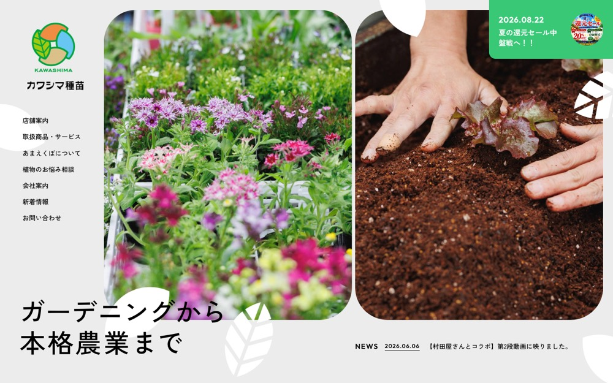

滋賀のガーデニング・家庭菜園・農業資材専門店
#ececec の地に #75c5d3 を大きな面で置く配色。影も枠線もほとんど使わない。本文 15px・行間 null、セクション間 132px。
配色
文字色は #000000 / #ffffff / #687770 / #d82129。
どこに使っているか（箇所数）
| 色 | 面 | 文字 | 枠線 | ボタンの地 |
|---|---|---|---|---|
#687770 |
1 | 2 | 0 | 0 |
#67c7f2 |
4 | 0 | 0 | 0 |
#f18c43 |
3 | 0 | 0 | 0 |
#ececec |
18 | 0 | 0 | 17 |
#333333 |
7 | 0 | 0 | 7 |
#000000 |
0 | 104 | 0 | 0 |
#ffffff |
6 | 34 | 0 | 6 |
#d82129 |
0 | 1 | 0 | 0 |
#75c5d3 は
文字
和文
Zen Kaku Gothic New欧文
Outfit本文
15px / 行間 nullこの見本は Noto Sans JP で表示していますあのイーハトーヴォのすきとおった風
あのイーハトーヴォのすきとおった風
あのイーハトーヴォのすきとおった風
あのイーハトーヴォのすきとおった風
あのイーハトーヴォのすきとおった風
あのイーハトーヴォのすきとおった風
あのイーハトーヴォのすきとおった風
余白とかたち
| コンテンツ幅 | 760px | |
|---|---|---|
| 読ませる段の幅 | 584px | |
| セクションの上下余白 | 132px | |
| 並びの間隔 | 6 / 8 / 15 / 17px | |
| 角丸 | 8px（大きな面は 15px） | |
| 影 | なし | |
| 画面幅の切り替え | 800 / 768 / 767 / 640 / 480px |
ボタン
お問い合わせ
#ececec / 19px / 500 / 角丸 8px
もっと見る
transparent / 19px / 500 / 角丸 0px
もっと見る
#333333 / 13px / 500 / 角丸 999px
ページの組み立て
上から順に、実際に並んでいたセクション。高さの比率もそのまま。
1
ヒーロー（画像）
6320px
2
1カラム・画像あり
640px ・ #687770
全2セクション、すべて全幅。
面と、その上に置く線・文字
| 面 | 使用箇所 | 線と文字 |
|---|---|---|
#67c7f2 |
4 | #75c5d3 |
#f18c43 |
3 | #75c5d3 |
#39c876 |
1 | #75c5d3 |
#cecabc |
1 | #75c5d3 |
線と文字の色は固定ではなく、乗っている面で入れ替える。
部品
同じ形が 4 箇所。角丸 15px ／ 影なし
タグ
角丸 8px ／ 19px
PCとスマホ
同じサイトを390px幅で測り直した値。
| PC 1440px | スマホ 390px | |
| 本文 | 15px | 14px / 行間 1.7 |
| 見出し | 61px | 32px |
| セクションの上下余白 | 132px | 24px |
| 左右の余白 | — | 0px |
| 並びの間隔 | 15px | 8px |
文字サイズの段は 20 / 16 / 14 / 12 / 10px。セクション余白はPCの18%まで詰める。
画像
1:1・24枚
3:4・22枚
4:3・6枚
54枚。角丸 0px。